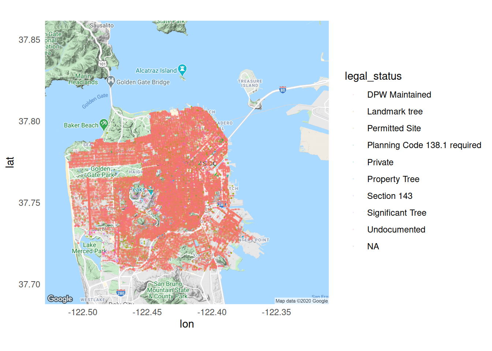

This week’s data cover trees in San Francisco.
sf_trees <- readr::read_csv('https://raw.githubusercontent.com/rfordatascience/tidytuesday/master/data/2020/2020-01-28/sf_trees.csv')
library(tidyverse); library(ggmap); library(skimr)
skim(sf_trees)| Name | sf_trees |
| Number of rows | 192987 |
| Number of columns | 12 |
| _______________________ | |
| Column type frequency: | |
| character | 6 |
| Date | 1 |
| numeric | 5 |
| ________________________ | |
| Group variables | None |
Variable type: character
| skim_variable | n_missing | complete_rate | min | max | empty | n_unique | whitespace |
|---|---|---|---|---|---|---|---|
| legal_status | 54 | 1.00 | 7 | 28 | 0 | 9 | 0 |
| species | 0 | 1.00 | 2 | 81 | 0 | 571 | 0 |
| address | 1487 | 0.99 | 1 | 40 | 0 | 85909 | 0 |
| site_info | 0 | 1.00 | 1 | 33 | 0 | 31 | 0 |
| caretaker | 0 | 1.00 | 3 | 23 | 0 | 22 | 0 |
| plot_size | 50013 | 0.74 | 1 | 23 | 0 | 524 | 0 |
Variable type: Date
| skim_variable | n_missing | complete_rate | min | max | median | n_unique |
|---|---|---|---|---|---|---|
| date | 124610 | 0.35 | 1955-09-19 | 2020-01-25 | 2001-06-12 | 7404 |
Variable type: numeric
| skim_variable | n_missing | complete_rate | mean | sd | p0 | p25 | p50 | p75 | p100 | hist |
|---|---|---|---|---|---|---|---|---|---|---|
| tree_id | 0 | 1.00 | 126529.21 | 79317.04 | 1.00 | 52601.50 | 120862.00 | 202607.50 | 261546.00 | ▇▆▆▆▇ |
| site_order | 1634 | 0.99 | 4.58 | 12.52 | -50.00 | 1.00 | 2.00 | 4.00 | 501.00 | ▇▁▁▁▁ |
| dbh | 41819 | 0.78 | 9.95 | 29.36 | 0.00 | 3.00 | 7.00 | 12.00 | 9999.00 | ▇▁▁▁▁ |
| latitude | 2832 | 0.99 | 37.77 | 0.25 | 37.51 | 37.74 | 37.76 | 37.78 | 47.27 | ▇▁▁▁▁ |
| longitude | 2832 | 0.99 | -122.45 | 0.42 | -138.28 | -122.45 | -122.43 | -122.41 | -122.37 | ▁▁▁▁▇ |
( My.Map <- ggmap(get_map("San Francisco, CA", zoom=12)) + geom_point(data=sf_trees, aes(x=longitude, y=latitude, color=legal_status, text=address), size=0.1, alpha=0.1) + theme_minimal() )## Source : https://maps.googleapis.com/maps/api/staticmap?center=San%20Francisco,%20CA&zoom=12&size=640x640&scale=2&maptype=terrain&language=en-EN&key=xxx-jAsYoenYRmMfzTFwXpVYE76s## Source : https://maps.googleapis.com/maps/api/geocode/json?address=San+Francisco,+CA&key=xxx-jAsYoenYRmMfzTFwXpVYE76s## Warning: Ignoring unknown aesthetics: text## Warning: Removed 2963 rows containing missing values (geom_point).
library(plotly)
library(widgetframe)
MMGGP <- ggplotly(My.Map)
htmlwidgets::saveWidget(
widgetframe::frameableWidget(MMGGP), here:::here('static/img/widgets/mmmgp1map.html'))